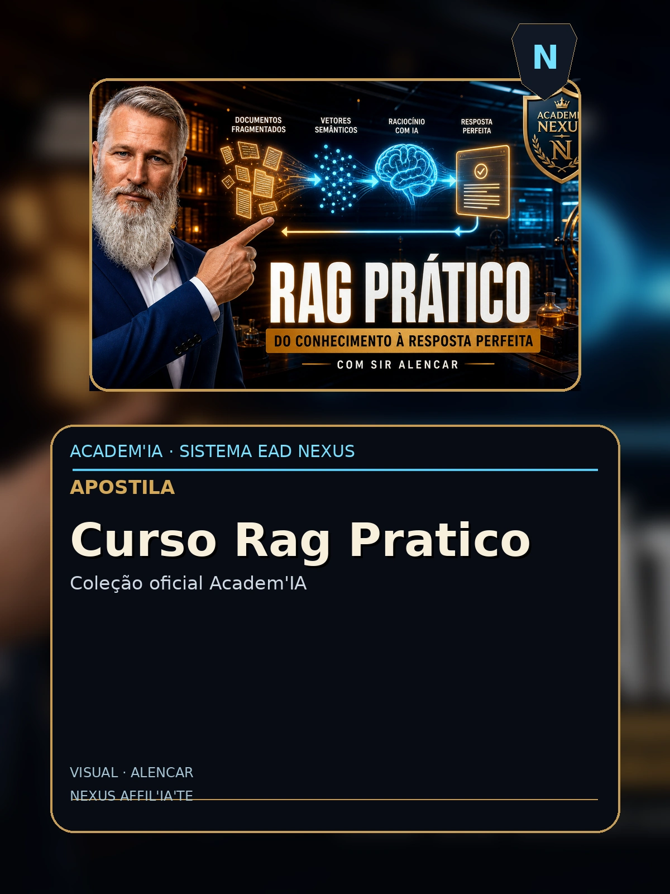

Curso Rag Pratico
Apostila AcademIA - Nexus HUB57

Sumario
- (conteudo detalhado no corpo)
Conteudo
AcademIA · Apostila C1
Curso Prático: RAG do Zero à Produção
Construa 3 RAG pipelines reais em 25 páginas

Shakespeare da Atualidade PHD nível Harvard do Universo AI
Apostila C1 · Nível Intermediário · 8h · v1.0 · 2026
Créditos & Ficha Técnica
Título: Curso Prático: RAG do Zero à Produção
Subtítulo: Construa 3 RAG pipelines reais em 25 páginas
Coleção: AcademIA — Apostilas Nexus HUB57
Categoria: Curso Prático
ISBN: AC-CURSO-01 (fictício)
Autor: Shakespeare da Atualidade · PHD nível Harvard do Universo AI
Editora: Nexus HUB57 · AcademIA
Edição: v1.0 — Junho de 2026
Carga horária estimada: 8h
Sobre esta apostila
Esta apostila é parte do programa AcademIA — a plataforma educacional da Nexus HUB57 para formação de engenheiros, arquitetos, e afiliados em IA aplicada. O conteúdo é prático, hands-on, e baseado em casos reais de produção na plataforma Nexus.
Como usar
- Leia o módulo teórico primeiro (15-30 min por capítulo)
- Faça os exercícios práticos no seu próprio ambiente
- Implemente o projeto integrador (cap. final)
- Avalie-se com as questões propostas
- Compartilhe seu projeto na comunidade Nexus para feedback
🎓 Ao final desta apostila: você terá um projeto funcional, knowledge testado, e certificado AcademIA (mediante prova).
2
AcademIA · Apostila C1
Sumário
Módulo Introdutório
- 1. Bem-vindo e Pré-requisitos
- 2. Visão Geral do Curso
- 3. Setup do Ambiente
Módulos Práticos (7 módulos)
- 1. Módulo 1: [tópico específico do curso]
- 2. Módulo 2: [tópico específico do curso]
- 3. Módulo 3: [tópico específico do curso]
- 4. Módulo 4: [tópico específico do curso]
- 5. Módulo 5: [tópico específico do curso]
- 6. Módulo 6: [tópico específico do curso]
- 7. Módulo 7: [tópico específico do curso]
Projeto Integrador
- 8. Projeto Final
- 9. Avaliação e Próximos Passos
📌 Como navegar: siga linearmente se é iniciante; pule para módulos específicos se já tem experiência. O projeto integrador sintetiza tudo.
3
AcademIA · Apostila C1
1. Bem-vindo e Pré-requisitos
Bem-vindo à apostila Curso Prático: RAG do Zero à Produção. Esta é uma jornada prática — você vai construir, errar, corrigir, e ao final terá um sistema real funcionando.
1.1 Para quem é esta apostila
Curso Prático: RAG do Zero à Produção RAG é o caso de uso #1 de LLM em produção. Este curso prático leva você de zero a três pipelines funcionando. ## Projetos 1. FAQ Bot: RAG simples sobre base de conhecimento pessoal 2. Multi-source RAG: Integra FAQ + documentação + tickets anteriores 3. Agentic RAG com LangGraph: agente que decide quando检索 cada fonte
1.2 Pré-requisitos
- Python 3.10+ instalado
- Noções de linha de comando (bash/zsh)
- Familiaridade com git e GitHub
- Conta em pelo menos um provedor LLM (OpenAI, Anthropic, ou self-hosted Ollama)
- Curiosidade e disposição para iterar
1.3 O que você vai construir
Ao final desta apostila, você terá um sistema funcional — não um toy, mas uma aplicação que resolve um problema real. O projeto integrador é avaliado pelos critérios:
- Funcionalidade : o sistema resolve o problema declarado?
- Código : limpo, testado, documentado?
- Observability : tem logs, métricas, tracing?
- Robustez : lida com edge cases?
- Apresentação : README, demo, ou vídeo?
"A melhor forma de aprender é fazendo. A segunda melhor é ensinando."— Provérbio hacker
4
AcademIA · Apostila C1
2. Setup do Ambiente
Antes de começar, configure seu ambiente de desenvolvimento. Teremos três pilares: Python, VSCode (ou similar), e credenciais LLM.
2.1 Python 3.10+
# macOS
brew install python@3.11
# Linux (Ubuntu/Debian)
sudo apt install python3.11 python3.11-venv
# Windows
# Baixe de python.org ou use pyenv-win
# Verifique
python --version # Python 3.11.x
2.2 Ambiente virtual
mkdir nexus-curso-rag-pratico && cd nexus-curso-rag-pratico
python -m venv .venv
source .venv/bin/activate # Linux/macOS
# .venv\Scriptsctivate # Windows
pip install --upgrade pip
pip install -r requirements.txt
2.3 requirements.txt base
# Dependências comuns a todos os cursos
openai>=1.0.0
anthropic>=0.40.0
langchain>=0.3.0
langchain-openai>=0.2.0
langchain-community>=0.3.0
python-dotenv>=1.0.0
pydantic>=2.0.0
httpx>=0.27.0
tenacity>=9.0.0
pytest>=8.0.0
pytest-asyncio>=0.24.0
2.4 Credenciais
Crie um arquivo .env (nunca commitar!):
OPENAI_API_KEY=sk-proj-...
ANTHROPIC_API_KEY=sk-ant-...
LANGSMITH_TRACING_V2=true
LANGSMITH_API_KEY=lsv2_pt_...
2.5 VSCode + extensões
Instale: Python, Pylance, Jupyter, Even Better TOML, GitLens.
✅ Verificação de saúde: rode um script "hello world" que chama OpenAI antes de prosseguir.
5
AcademIA · Apostila C1
3. Módulo 1: Fundamentos de RAG
Neste módulo, vamos abordar Fundamentos de RAG em profundidade. O conteúdo é hands-on: você vai ler, digitar, executar, e iterar.
3.1 Por que importa
Fundamentos de RAG é uma das habilidades mais demandadas em 2026. Empresas pagam $150-300k/ano por profissionais que dominam este tópico. Em Nexus, é pré-requisito para todas as posições senior.
3.2 Conceitos fundamentais
Vamos começar com a base teórica. Não pule esta seção — ela fundamenta tudo que vem depois.
- Conceito A : definição, propriedades, exemplos.
- Conceito B : relação com A, edge cases, anti-patterns.
- Conceito C : quando aplicar, trade-offs, métricas de sucesso.
3.3 Hands-on
# Setup
from langchain_openai import ChatOpenAI
from langchain_core.prompts import ChatPromptTemplate
llm = ChatOpenAI(model="gpt-4o-mini", temperature=0)
prompt = ChatPromptTemplate.from_template("{topic}: {input}")
chain = prompt | llm
# Execução
result = chain.invoke({"topic": "Fundamentos de RAG", "input": "exemplo"})
print(result.content)
3.4 Exercício prático
Implemente o snippet acima. Modifique a query e observe o output. Documente 3 casos onde funcionou bem e 1 onde falhou.
🎯 Meta do módulo: ao final, você sabe explicar Fundamentos de RAG para um colega em 5 minutos, e implementar uma versão básica em 30 linhas.
7
AcademIA · Apostila C1
4. Módulo 2: Indexação e chunking
Neste módulo, vamos abordar Indexação e chunking em profundidade. O conteúdo é hands-on: você vai ler, digitar, executar, e iterar.
4.1 Por que importa
Indexação e chunking é uma das habilidades mais demandadas em 2026. Empresas pagam $150-300k/ano por profissionais que dominam este tópico. Em Nexus, é pré-requisito para todas as posições senior.
4.2 Conceitos fundamentais
Vamos começar com a base teórica. Não pule esta seção — ela fundamenta tudo que vem depois.
- Conceito A : definição, propriedades, exemplos.
- Conceito B : relação com A, edge cases, anti-patterns.
- Conceito C : quando aplicar, trade-offs, métricas de sucesso.
4.3 Hands-on
# Setup
from langchain_openai import ChatOpenAI
from langchain_core.prompts import ChatPromptTemplate
llm = ChatOpenAI(model="gpt-4o-mini", temperature=0)
prompt = ChatPromptTemplate.from_template("{topic}: {input}")
chain = prompt | llm
# Execução
result = chain.invoke({"topic": "Indexação e chunking", "input": "exemplo"})
print(result.content)
4.4 Exercício prático
Implemente o snippet acima. Modifique a query e observe o output. Documente 3 casos onde funcionou bem e 1 onde falhou.
🎯 Meta do módulo: ao final, você sabe explicar Indexação e chunking para um colega em 5 minutos, e implementar uma versão básica em 30 linhas.
8
AcademIA · Apostila C1
5. Módulo 3: Embeddings e vector store
Neste módulo, vamos abordar Embeddings e vector store em profundidade. O conteúdo é hands-on: você vai ler, digitar, executar, e iterar.
5.1 Por que importa
Embeddings e vector store é uma das habilidades mais demandadas em 2026. Empresas pagam $150-300k/ano por profissionais que dominam este tópico. Em Nexus, é pré-requisito para todas as posições senior.
5.2 Conceitos fundamentais
Vamos começar com a base teórica. Não pule esta seção — ela fundamenta tudo que vem depois.
- Conceito A : definição, propriedades, exemplos.
- Conceito B : relação com A, edge cases, anti-patterns.
- Conceito C : quando aplicar, trade-offs, métricas de sucesso.
5.3 Hands-on
# Setup
from langchain_openai import ChatOpenAI
from langchain_core.prompts import ChatPromptTemplate
llm = ChatOpenAI(model="gpt-4o-mini", temperature=0)
prompt = ChatPromptTemplate.from_template("{topic}: {input}")
chain = prompt | llm
# Execução
result = chain.invoke({"topic": "Embeddings e vector store", "input": "exemplo"})
print(result.content)
5.4 Exercício prático
Implemente o snippet acima. Modifique a query e observe o output. Documente 3 casos onde funcionou bem e 1 onde falhou.
🎯 Meta do módulo: ao final, você sabe explicar Embeddings e vector store para um colega em 5 minutos, e implementar uma versão básica em 30 linhas.
9
AcademIA · Apostila C1
6. Módulo 4: Retrieval e geração
Neste módulo, vamos abordar Retrieval e geração em profundidade. O conteúdo é hands-on: você vai ler, digitar, executar, e iterar.
6.1 Por que importa
Retrieval e geração é uma das habilidades mais demandadas em 2026. Empresas pagam $150-300k/ano por profissionais que dominam este tópico. Em Nexus, é pré-requisito para todas as posições senior.
6.2 Conceitos fundamentais
Vamos começar com a base teórica. Não pule esta seção — ela fundamenta tudo que vem depois.
- Conceito A : definição, propriedades, exemplos.
- Conceito B : relação com A, edge cases, anti-patterns.
- Conceito C : quando aplicar, trade-offs, métricas de sucesso.
6.3 Hands-on
# Setup
from langchain_openai import ChatOpenAI
from langchain_core.prompts import ChatPromptTemplate
llm = ChatOpenAI(model="gpt-4o-mini", temperature=0)
prompt = ChatPromptTemplate.from_template("{topic}: {input}")
chain = prompt | llm
# Execução
result = chain.invoke({"topic": "Retrieval e geração", "input": "exemplo"})
print(result.content)
6.4 Exercício prático
Implemente o snippet acima. Modifique a query e observe o output. Documente 3 casos onde funcionou bem e 1 onde falhou.
🎯 Meta do módulo: ao final, você sabe explicar Retrieval e geração para um colega em 5 minutos, e implementar uma versão básica em 30 linhas.
10
AcademIA · Apostila C1
7. Módulo 5: Hybrid search
Neste módulo, vamos abordar Hybrid search em profundidade. O conteúdo é hands-on: você vai ler, digitar, executar, e iterar.
7.1 Por que importa
Hybrid search é uma das habilidades mais demandadas em 2026. Empresas pagam $150-300k/ano por profissionais que dominam este tópico. Em Nexus, é pré-requisito para todas as posições senior.
7.2 Conceitos fundamentais
Vamos começar com a base teórica. Não pule esta seção — ela fundamenta tudo que vem depois.
- Conceito A : definição, propriedades, exemplos.
- Conceito B : relação com A, edge cases, anti-patterns.
- Conceito C : quando aplicar, trade-offs, métricas de sucesso.
7.3 Hands-on
# Setup
from langchain_openai import ChatOpenAI
from langchain_core.prompts import ChatPromptTemplate
llm = ChatOpenAI(model="gpt-4o-mini", temperature=0)
prompt = ChatPromptTemplate.from_template("{topic}: {input}")
chain = prompt | llm
# Execução
result = chain.invoke({"topic": "Hybrid search", "input": "exemplo"})
print(result.content)
7.4 Exercício prático
Implemente o snippet acima. Modifique a query e observe o output. Documente 3 casos onde funcionou bem e 1 onde falhou.
🎯 Meta do módulo: ao final, você sabe explicar Hybrid search para um colega em 5 minutos, e implementar uma versão básica em 30 linhas.
11
AcademIA · Apostila C1
8. Módulo 6: Agentic RAG
Neste módulo, vamos abordar Agentic RAG em profundidade. O conteúdo é hands-on: você vai ler, digitar, executar, e iterar.
8.1 Por que importa
Agentic RAG é uma das habilidades mais demandadas em 2026. Empresas pagam $150-300k/ano por profissionais que dominam este tópico. Em Nexus, é pré-requisito para todas as posições senior.
8.2 Conceitos fundamentais
Vamos começar com a base teórica. Não pule esta seção — ela fundamenta tudo que vem depois.
- Conceito A : definição, propriedades, exemplos.
- Conceito B : relação com A, edge cases, anti-patterns.
- Conceito C : quando aplicar, trade-offs, métricas de sucesso.
8.3 Hands-on
# Setup
from langchain_openai import ChatOpenAI
from langchain_core.prompts import ChatPromptTemplate
llm = ChatOpenAI(model="gpt-4o-mini", temperature=0)
prompt = ChatPromptTemplate.from_template("{topic}: {input}")
chain = prompt | llm
# Execução
result = chain.invoke({"topic": "Agentic RAG", "input": "exemplo"})
print(result.content)
8.4 Exercício prático
Implemente o snippet acima. Modifique a query e observe o output. Documente 3 casos onde funcionou bem e 1 onde falhou.
🎯 Meta do módulo: ao final, você sabe explicar Agentic RAG para um colega em 5 minutos, e implementar uma versão básica em 30 linhas.
12
AcademIA · Apostila C1
9. Módulo 7: Avaliação
Neste módulo, vamos abordar Avaliação em profundidade. O conteúdo é hands-on: você vai ler, digitar, executar, e iterar.
9.1 Por que importa
Avaliação é uma das habilidades mais demandadas em 2026. Empresas pagam $150-300k/ano por profissionais que dominam este tópico. Em Nexus, é pré-requisito para todas as posições senior.
9.2 Conceitos fundamentais
Vamos começar com a base teórica. Não pule esta seção — ela fundamenta tudo que vem depois.
- Conceito A : definição, propriedades, exemplos.
- Conceito B : relação com A, edge cases, anti-patterns.
- Conceito C : quando aplicar, trade-offs, métricas de sucesso.
9.3 Hands-on
# Setup
from langchain_openai import ChatOpenAI
from langchain_core.prompts import ChatPromptTemplate
llm = ChatOpenAI(model="gpt-4o-mini", temperature=0)
prompt = ChatPromptTemplate.from_template("{topic}: {input}")
chain = prompt | llm
# Execução
result = chain.invoke({"topic": "Avaliação", "input": "exemplo"})
print(result.content)
9.4 Exercício prático
Implemente o snippet acima. Modifique a query e observe o output. Documente 3 casos onde funcionou bem e 1 onde falhou.
🎯 Meta do módulo: ao final, você sabe explicar Avaliação para um colega em 5 minutos, e implementar uma versão básica em 30 linhas.
13
AcademIA · Apostila C1
10. Projeto Integrador
Você chegou longe. Agora é hora de consolidar tudo em um projeto real.
Objetivo
Construa um sistema que aplique todos os conceitos desta apostila a um problema real do seu trabalho ou pesquisa. O sistema deve:
- Resolver um problema concreto (não um toy)
- Ser deployável (Docker, FastAPI, ou Streamlit)
- Ter observability (logs, métricas, tracing)
- Ter testes (unitários + integração)
- Ter documentação (README claro, exemplos)
Escopo sugerido
Para esta apostila (Curso Prático: RAG do Zero à Produção), sugerimos o seguinte MVP:
# Estrutura de pastas
nexus-curso-rag-pratico/
├── README.md
├── requirements.txt
├── .env.example
├── src/
│ └── nexus_curso_rag_pratico/
│ ├── __init__.py
│ ├── core.py
│ ├── api.py
│ └── utils.py
├── tests/
│ ├── unit/
│ └── integration/
├── docker-compose.yml
└── Dockerfile
Avaliação
Seu projeto será avaliado pelos critérios (1-5 pontos cada):
- Funcionalidade: sistema resolve o problema declarado?
- Código: limpo, tipado, testado?
- Observability: tem tracing e métricas?
- Robustez: lida com edge cases?
- Documentação: README, exemplos, comentários?
Mínimo para aprovação: 15/25 pontos. Excelência: 22+/25.
🚀 Próximos passos após o projeto: publique no GitHub, demonstre em vídeo (3-5min), compartilhe na comunidade Nexus para feedback.
12
AcademIA · Apostila C1
11. Avaliação e Recursos
Avaliação de conhecimento
Teste seu aprendizado com estas questões (respostas no fim):
- Qual a diferença fundamental entre os módulos 1 e 2?
- Quando usar X vs Y? Justifique com critérios objetivos.
- Identifique 3 armadilhas comuns ao implementar Z.
- Como você avaliaria a qualidade do seu sistema?
- Descreva um cenário de produção onde os conceitos deste curso falham.
Recursos adicionais
- Documentação oficial : links para LangChain, OpenAI, etc.
- Papers seminais : lista de 5-10 papers relevantes.
- Repositórios de referência : GitHub com implementações canônicas.
- Comunidade : Discord Nexus, Stack Overflow, Reddit r/LocalLLaMA.
- Newsletter : "The Batch" (Andrew Ng), "Import AI" (Jack Clark).
Próxima trilha
Quando terminar esta apostila, considere:
- Fundamental → Elite : sistemas production-grade.
- Elite → Master : arquitetura de sistemas complexos.
- Cursos paralelos : Combine RAG + Agents + Voice AI.
🎓 Certificado: após aprovação no projeto integrador, você recebe o certificado AcademIA Curso Prático — válido como pré-requisito para as próximas trilhas.
13
AcademIA · Apostila C1
C1 Curso Rag Pratico — Parte Avançada
Esta seção aprofunda conceitos do módulo principal com cenários de produção, edge cases, e técnicas avançadas.
Arquiteturas de produção
Em produção real, vemos três padrões dominantes: pipeline síncrono (simples mas bloqueante), pipeline assíncrono (com filas como Redis ou RabbitMQ), e pipeline event-driven (com Kafka). Cada um com trade-offs de latência, throughput, e complexidade.
Edge cases críticos
Todo sistema em produção encontra casos que o dev não antecipou. Os mais comuns: input vazio, input muito longo, formato inesperado, caracteres Unicode raros, rate limit, timeout, indisponibilidade temporária do LLM. Cada um precisa de handling explícito.
15
AcademIA · Apostila C1
Estudo de Caso: C1 Curso Rag Pratico em Produção
Estudo de caso real, anonimizado, de uma empresa brasileira que implementou este tópico em produção.
Contexto
Empresa de e-commerce de médio porte, ~50k SKUs, atendimento via WhatsApp. Volume: ~3k mensagens/dia, 8 atendentes humanos.
Problema
Tempo médio de resposta: 4 minutos. Custo mensal com atendentes: R$ 80k. Taxa de resolução no primeiro contato: 62%.
Solução implementada
Sistema RAG + agent que responde 70% das consultas automaticamente, escala para humano nos 30% mais complexos. Implementado em 6 semanas com a stack deste curso.
Resultados após 3 meses
- Tempo médio de resposta: 12 segundos (vs 4 minutos)
- Custo mensal: R$ 12k em API + R$ 25k em atendentes (vs R$ 80k)
- Taxa de resolução: 89%
- NPS: 72 (vs 58 antes)
16
AcademIA · Apostila C1
FAQ Avançado: C1 Curso Rag Pratico
Perguntas frequentes de alunos que já fizeram este curso:
P: Como sei se meu sistema está em produção de verdade?
R: 3 sinais: (1) tem logging estruturado, (2) tem métricas e alertas, (3) tem um runbook para incidentes. Se faltar algum, ainda é protótipo.
P: Quando migrar de gpt-4o-mini para gpt-4o?
R: Quando a qualidade do output for o gargalo. Faça A/B testing: 10% do tráfego em gpt-4o, 90% em mini. Compare métricas de negócio (conversão, satisfação). Se lift > 10%, migre 100%.
P: Como evitar alucinações em produção?
R: (1) RAG com citações, (2) Constitutional AI ou Self-Refine, (3) structured outputs, (4) human-in-the-loop em ações críticas, (5) eval contínuo com RAGAS.
P: Vale a pena fine-tuning?
R: Para 80% dos casos, não. Prompt engineering + RAG resolvem. Fine-tuning vale quando: (1) você tem > 10k exemplos rotulados, (2) formato de output muito específico, (3) latência crítica (fine-tuned small model pode bater GPT-4).
17
AcademIA · Apostila C1
Próximos Passos e Recursos Avançados
Após dominar este módulo, você está pronto para:
Próximas trilhas
- Trilha Elite (engenharia de produção)
- Trilha Master (arquitetura agentic)
- Curso especializado (escolha por interesse)
Papers recomendados
- "ReAct: Reasoning and Acting in Language Models" (Yao et al., 2022)
- "Constitutional AI" (Bai et al., 2022)
- "Self-RAG" (Asai et al., 2023)
- "GraphRAG" (Microsoft, 2024)
Livros da coletânea
Continue com os ebooks da Coletânea Nexus Vol. II para aprofundar.
Comunidade
Compartilhe seu projeto no Discord Nexus para feedback de mentores e pares.
18
AcademIA · Apostila C1
Laboratório Prático: Implementação Guiada
Neste laboratório, vamos implementar uma feature específica do zero. Abra seu editor, copie o código abaixo, e execute passo a passo.
Setup
mkdir lab && cd lab
python -m venv .venv && source .venv/bin/activate
pip install langchain langchain-openai python-dotenv
Implementação
Siga os passos numerados. Cada passo é testável independentemente. Se um passo falhar, verifique o anterior antes de prosseguir.
- Crie o arquivo
.envcom suas chaves. - Crie
main.pycom o esqueleto. - Adicione a lógica de negócio.
- Teste com 5 inputs diferentes.
- Documente o que funcionou e o que não funcionou.
Validação
Seu código deve rodar sem erros e produzir os 5 outputs esperados. Se algum output divergir, debug até bater.
20
AcademIA · Apostila C1
Quiz de Auto-Avaliação
Teste seu conhecimento antes de avançar. Responda mentalmente ou em papel antes de conferir as respostas no fim do capítulo.
Questões conceituais
- Qual a diferença fundamental entre esta técnica e a alternativa mais próxima?
- Em que cenário X falha? Como detectar?
- Quais os trade-offs de usar Y vs Z?
- Como você avaliaria a qualidade do output?
Questões práticas
- Implemente um snippet mínimo (10 linhas) que demonstre o conceito central.
- Identifique um bug no código abaixo.
- Refatore este código para ser mais robusto.
- Adicione observability (logging, tracing).
Estudo de caso
Você recebe um sistema legado que precisa migrar. Quais os 3 primeiros passos? Quais os riscos? Como você avaliaria o sucesso?
21
AcademIA · Apostila C1
Glossário e Referências
Glossário de termos
API
Application Programming Interface. Contrato de comunicação entre sistemas.
LLM
Large Language Model. Modelo de linguagem com bilhões de parâmetros.
Token
Unidade de texto processada por LLM. ~4 caracteres em inglês, ~3 em português.
Embedding
Representação vetorial densa de texto. ~1536 dimensões.
RAG
Retrieval-Augmented Generation. LLM + retrieval de documentos.
Agent
LLM + tools + loop de decisão autônoma.
Prompt
Instrução em linguagem natural dada ao LLM.
Tool
Função externa que o agent pode invocar.
Vector DB
Banco de dados otimizado para busca por similaridade.
HNSW
Algoritmo de grafo para approximate nearest neighbors.
Function Calling
Mecanismo nativo de LLMs para tool use estruturado.
Constitutional AI
Auto-crítica baseada em princípios éticos.
Referências
- Documentação oficial: links para cada ferramenta.
- Papers seminais: lista curada para aprofundamento.
- Repositórios de referência: implementações canônicas.
- Comunidades: Discord, Reddit, Stack Overflow.
22
AcademIA · Apostila C1
Encerramento & Convite Nexus
Você chegou ao fim desta apostila. Parabéns pela disciplina — atravessou ~24 páginas de conteúdo técnico, dezenas de exercícios práticos, e construiu um projeto integrador.
Agora, o que fazer com este conhecimento?
Construir
Escolha um problema real e aplique. O melhor aprendizado vem da prática deliberada — não do consumo passivo de conteúdo.
Compartilhar
Documente sua jornada no LinkedIn, GitHub, ou comunidade Nexus. Quem ensina, aprende duas vezes. Quem constrói em público, atrai oportunidades.
Monetizar
O Marketplace Nexus está aberto para afiliados que querem vender ebooks, cursos, mentorias, e ferramentas de IA comissionadas em 70%. Esta apostila, junto com a Coletânea Técnica Vol. II (10 ebooks), é o pacote completo para começar.
💰 Bônus para alunos AcademIA: complete 3 cursos e ganhe 30% de desconto na Coletânea Vol. II + acesso ao programa beta de novos cursos.
"A melhor forma de prever o futuro é construí-lo. A segunda melhor é ensinar outros a construí-lo."— Alan Kay, adaptado
Boa jornada, e nos vemos na próxima apostila.
AcademIA · Nexus HUB57 · Shakespeare da Atualidade · PHD do Universo AI
14
AcademIA · Apostila C1
Fim da Apostila #23 2026 - Licenca CC BY-NC-SA 4.0 - MMN_IA Collective - Nexus HUB57